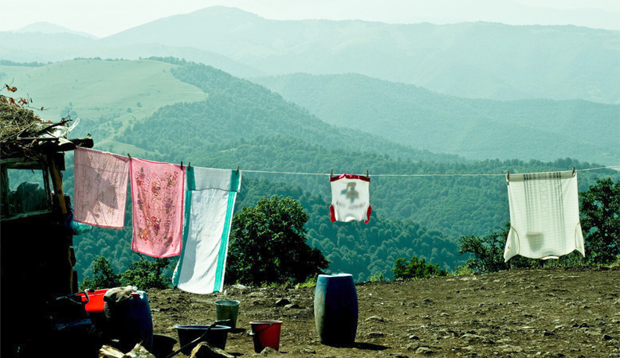
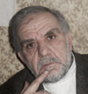

НОЕМБЕРЯН: БЕЖЕНЦЫ ДВАДЦАТОГО ВЕКА
Воскан Саргсян
В истории человечества были большие переселения народов, когда сотни тысяч людей оставив места своего жительства, обосновывались в других местах. В конце 20-го века подобное случилось на Южном Кавказе, который в то время еще назывался Закавказьем. Советская власть еще была в силе, но это не предотвратило массовое нарушение прав людей, живущих в этой единой стране. Я попробовал изучить процесс двухстороннего вынужденного переселения армян и азербайджанцев на примере Ноемберянского района Армянской ССР.
В Ноемберянском районе азербайджанцы жили в селах Октембер (бывший Верин Корплу), Птгаван, Ахтанак, Багратащен, Дебедаван и в микрорайоне Айрум. В селе Джуджеван жила только одна азербайджанская семья, которая занималась скотоводством, один из детей этой семьи, Шахин Мустафаев, с отличием закончивший армянскую среднюю школу, - сейчас министр экономического развития Азербайджана. Села Октембер и Дебедаван были населены исключительно азербайджанцами, а в остальных азербайджанцы жили с армянами смешанно.
Из Ноемберянского района миграция азербайджанцев произошла в основном в ноябре 1988 года. Прошло 24 года, и многих участников этого процесса уже нет в живых, воспоминания очевидцев стерлись, но некоторые эпизоды все же четко отпечатались в памяти. Я повстречался и побеседовал с людьми, которые были не только очевидцами, свидетелями этих событий, но и принимали активное участие в процессе.
В Ноемберянском районе азербайджанцы жили в селах Октембер (бывший Верин Корплу), Птгаван, Ахтанак, Багратащен, Дебедаван и в микрорайоне Айрум. В селе Джуджеван жила только одна азербайджанская семья, которая занималась скотоводством, один из детей этой семьи, Шахин Мустафаев, с отличием закончивший армянскую среднюю школу, - сейчас министр экономического развития Азербайджана. Села Октембер и Дебедаван были населены исключительно азербайджанцами, а в остальных азербайджанцы жили с армянами смешанно.
Из Ноемберянского района миграция азербайджанцев произошла в основном в ноябре 1988 года. Прошло 24 года, и многих участников этого процесса уже нет в живых, воспоминания очевидцев стерлись, но некоторые эпизоды все же четко отпечатались в памяти. Я повстречался и побеседовал с людьми, которые были не только очевидцами, свидетелями этих событий, но и принимали активное участие в процессе.
Ширак Едигарян
Ширак Едигарян свидетельствует: «В основном я помогал с обменом жилья. Азербайджанцы еще были тут, в Ноемберянском районе, сначала пришли армянские беженцы из Азербайджана. Мы их приводили в какой-нибудь населенный пункт, азербайджанец показывал свой дом, армянин - чертеж своего дома. Азербайджанец на день уезжал в Варташен (ныне город Огуз, административный центр Огузского района) возвращался, говорил: «согласен» и проводился равнозначный обмен. Это делалось для того, чтобы нашим соотечественникам было где жить, невозможно было долго оставлять их в клубах».
Спрашиваю Едигаряна: «Но ведь коммунистическая партия, советские власти призывали армян и азербайджанцев оставаться там, где они жили?»
«Ситуация вышла из-под контроля, уже никакие призывы не могли иметь воздействия, поезд набрал ход и остановить его было невозможно. Я отвечал на многие письма переадресованные нам их Москвы. В них азербайджанцы жаловались на то, что мы их выселяем. Мы отвечали, что не выселяем, мы просим этого гражданина вернуться, и гарантируем его безопасность» . Ш. Едигарян свидетельствует, что обмен домами между селами Октембер Ноемберянского района и селом Чардахлу Шамхорского района Азербайджана (кстати оттуда родом маршалы Ованес Баграмян и Амазасп Бабаджанян) происходил с участием официальных представителей советских государственных и правоохранительных органов.
Он рассказывает: «Обмен домов Октембера и Чардахлу прошел организовано, власти двух сторон провели переговоры, потом организовали отправку и прием граждан. Я был в составе комиссии созданной по этому поводу. В комиссии был также начальник КГБ Ноемберянского района Лева Варданян, начальник районной милиции Пайкар Галумян, и Геворг Даниелян, не помню, какую он должность тогда он занимал в советской прокуратуре, но впоследствии стал министром юстиции РА. В составе этой комиссии мы поехали в Чардахлу, посетили все дома, справлялись о жилищных вопросах, азербайджанцы нам сообщили, какое имущество они оставили в Октембере. Мы сами смотрели и делали учет тому, что они оставили в Армении. Этот был организованный процесс. Когда в феврале 1988 года мы приняли беженцев из Сумгаита, все было стихийно, мы их отвезли и с грехом пополам разместили в клубе микрорайона Айрум.
В ноябре 1988 года я сам сопровождал беженцев из Вардашена в Армению. В Вардашене был представитель из Москвы, там нас приняли в исполкоме, в райкоме, мы встретились с азербайджанцами, переселившимися из Армении. В одном из сел Вардашенского района мы встретились с корреспондентом районной газеты «Циацан» баграташенцем Билалом Ансаровым.»
Ш. Едигарян рассказывает, что транспортировка имущества жителей Октембера и Чардахлу проводилась грузовиками Ноемберянского районного автопредприятия. Он говорит, что ни один азербайджанец Ноемберянского района не пострадал во время миграции, уезжая в Азербайджан, они взяли с собой все свое имущество.
«Азербайджанцы унесли отсюда все, что имели. Они даже свои саженцы королька, даже своих собак увезли с собой. Наши соотечественники из Чардахлу тоже смогли привести свое имущество. Осенью 1988 года я поехал в Вардашен с нашими соотечественниками, переселившимися оттуда, чтобы привезти их имущество. 20 человек было из Ноемберяна, столько же из Алаверди. Азербайджанцы предоставили для этих целей грузовики. На 20 машинах привезли мы груз до Птгавана. С нами был Оганян Рафик (впоследствии он стал главой села Птгаван), который в то время был зам. начальника исполкома Варташенского райсовета. Все друг друга хорошо знали. Азербайджанцы просили, чтобы они не покидали Азербайджан, говорили: «Рафик моалим, ты не уезжай». Дверь его кабинета была заперта, никто ничего не тронул, » - рассказывает Ширак Едигарян.

Самвел Бегларян
Самвел Бегларян рассказывает: «Когда в Азербайджане накалялась обстановка, оттуда приходили раненные, пострадавшие люди, приходили через Красный Мост, через Казах - мало ходили. Когда азербайджанцы Ноемберянского района видели, в каком плохом состоянии приходят армяне из Азербайджана, они принимали решение покинуть Ноемберян. Здесь уже не хватало места, азербайджанцы были еще здесь, а армяне – беженцы из Азербайджана размещались в общежитиях, в частных домах. Руководители азербайджано-населенного села Октембер, меня, как руководителя общественного движения пригласили к себе и сказали: «Мы уверены, что невозможно здесь оставаться, до 20-29 ноября мы выйдем отсюда». Они обратились в райсовет Ноемберяна, райсовет им выделил машины, и из жителей района, у кого были грузовики, отвозили азербайджанцев и их багаж. Из Ноемберяна азербайджанцев перевозили машинами районного автопредприятия. Заправку делал райсовет, тогда проблем с топливом не было. Водителям давали следующее указание – добраться до границы, до Красного моста, на территорию Азербайджана не въезжать. Наши ребята оставались там до тех пор, пока азербайджанцев встречали с грузовиками и тракторами, водители ждали, пока придут родственники переселяющихся азербайджанцев, чтобы увезти их имущество. Часто наши ребята там целый день проводили, пока дожидались родственников.
У нас было указание и от райсовета и от руководителей Общенационального движения не наносить вред ни одному азербайджанцу, чтобы Москва не ввела войска в Армению. В то время секретарь райкома компартии не верил, что мы приобретем независимость, думал, что если здесь убьют азербайджанца, то его накажут. 24 ноября мы сделали митинг и сказали: «Азербайджанцы, вы все время говорите что уедете, но не уезжаете».
Последние машины, нагруженные имуществом азербайджанцев, покинули Ноемберянский район 28 ноября, 29 ноября первые автоколонны наших соотечественников вошли в Октембер. Поскольку в подрайоне Баграташена – в Птгаване, Баграташене, Дебедаване, азербайджанцы имели общение с азербайджанцами Марнеули, они вышли раньше, потом за ними последовали Птгаван, Айрум, позже всех, с 25 по 28 ноября, ушли жители Октембера.»
Очевидно, что движение было насколько спонтанным, настолько и организованным. Митинги фактически завершались созданием организаций, которые стали структурными подразделениями АОД, ставшей в дальнейшем уже партией, и позже - правящей партией в независимой Армении.
Между тем призывы «сохранять сдержанность», «не терять здравомыслия» и т. д. фигурировали во всех решениях партийных и советских органов в то время. Но они оставались лишь призывами и не превращались в конкретные программы.
Так, ЦК КПСС и Совет Министров СССР принимают Решение от 5 декабря 1988 года, где говорится: «В ЦК КПСС и Совет Министров СССР поступают многочисленные жалобы от трудящихся Азербайджанской ССР и Армянской ССР в связи с увольнениями с работы по национальному признаку, принимающими массовый характер. Имеются достоверные данные о том, что хозяйственные и партийные руководители не только не дают отпора этому преступному своеволию, давлению и угрозам в отношении ни в чем не повинных людей, а зачастую прямо потворствуют незаконным действиям и даже принимают в них непосредственное участие. Центральный Комитет КПСС и Совет Министров СССР постановляют: потребовать от ЦК компартий Азербайджана и Армении, Советов Министров Азербайджанской ССР и Армянской ССР, министерств и ведомств решительно пресечь грубейшие нарушения конституционных прав граждан, принять все необходимые меры по предотвращению их повторения впредь. Руководителей предприятий, учреждений и организаций, а также партийных и советских органов, допускающих незаконные увольнения с работы граждан по национальному признаку, привлекать к персональной ответственности вплоть до исключения из партии, снятия с занимаемых постов, а в случаях, предусмотренных законом, привлечения к уголовной ответственности.
Работу по искоренению подобного рода проявлений националистического и противозаконного характера проводить в обстановке широкой гласности. О мерах, принятых в отношении виновных лиц, информировать трудовые коллективы, а также доводить до сведения общественности через печать и другие средства массовой информации. О выполнении настоящего постановления доложить ЦК КПСС и Совету Министров СССР».
Решение подписано Секретарем Центрального Комитета КПСС М. Горбачевым и Председателем Совета Министров СССР Н. Рыжковым. Отметим, что это решение носило формальный характер, поскольку не известны случаи, когда из-за увольнения по национальному признаку был бы кто-либо привлечен к ответственности. Это решение было запоздалым. В Ноемберян уже приехали тысячи граждан армянской национальности из Сумгаита, Шамхора, Вардашена, и Ноемберянский район покинули уже все азербайджанцы. Естественно, что этим людям уже не нужны были прежние рабочие места.
В тот же день, 5 декабря 1988 года, Совет министров СССР, ВЦСПС и ЦК ВЛКСМ приняли «Решение о мероприятиях по оказанию помощи детям Азербайджанской ССР и Армянской ССР, которое относится к размещению и оказанию помощи в учебе детям, вынужденно покинувшим места своего проживания. Речь идет о предоставлении до 20 тысяч мест в профсоюзных лечебницах, туристических учреждениях и пионерских лагерях санаторного типа и 4 тысяч мест в лагерях ЦК ВЛКСМ для временного размещения детей дошкольного и школьного возраста. В тексте обращает на себя внимание формулировка «при необходимости вместе с родителями». То есть речь идет об организованной эвакуации семей. Это мероприятие было направлено на облегчение положения уже покинувших свои дома людей.
Напомним, что в организации миграции участвовали партийные и административные работники, в том числе и из Москвы, о чем отмечено в вышеизложенных воспоминаниях Ширака Едигаряна. Нужно отметить, что еще в то время, даже партийные работники имели подозрения, что весь этот процесс – является политикой, разработанной в Кремле.
Флора Арутюнян
Госпожа Флора вспоминает: «Переселение людей длилось всего 10 дней. Власти не хотели это все предотвратить. Была осень 1988 года. Я сидела в своем кабинете вместе с несколькими преподавателями из Ереванского Института народного хозяйства. Мы беседовали. Речь зашла о том, что сегодня ночью из Азербайджана пришли беженцы-армяне, совсем избитые, смогли взять с собой только одежду. Они пришли в Иджеван через Казах. Первый секретарь райкома, начальник районного КГБ и начальник милиции поехали, чтобы принять их на границе. Во время этого разговора преподаватели спросили меня: Как же это так? Я им сказала, что без ведома Горбачева такое не могло случиться. Потому что, когда людей выгоняют из дома, лишают их имущества – это похоже на геноцид. Даже еще в то время в моей голове возникла мысль, что это делается с ведома, при поддержке и поощрении главы государства. Как могли тысячи людей переместиться, и глава страны не знал об этом? Они были в курсе, и они сами управляли этим движением, и это было их идеей».
Флора Арутюнян рассказывает, что в тот день, увидев ужасное положение армянских беженцев на границе в Иджеване, первый секретарь райкома Саяд Петросян был сильно расстроен. Он созвал совещание руководства райкома и объявил: «В Ноемберянском районе проживает 5500 азербайджанцев, если мы не хотим, чтобы армяне приходили из Азербайджана избитые и ограбленные, мы должны отправить азербайджанцев отсюда в нормальном состоянии».
Воскан Саргсян
октябрь-декабрь 2012 года
Ноемберян
Опубликовано: 12-03-13